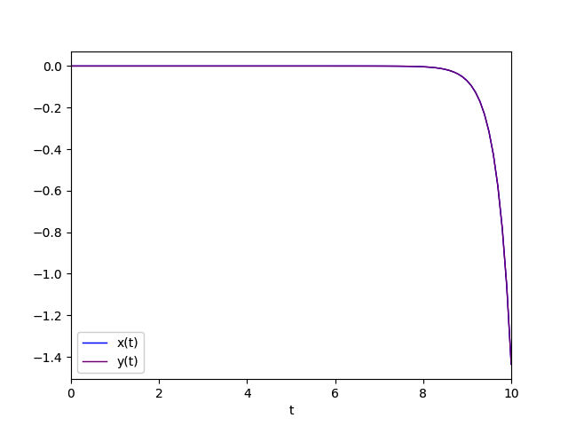
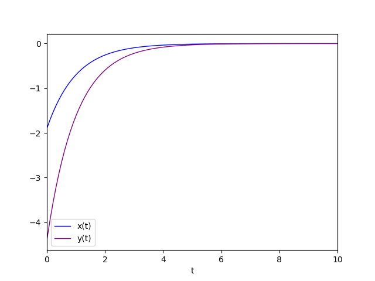
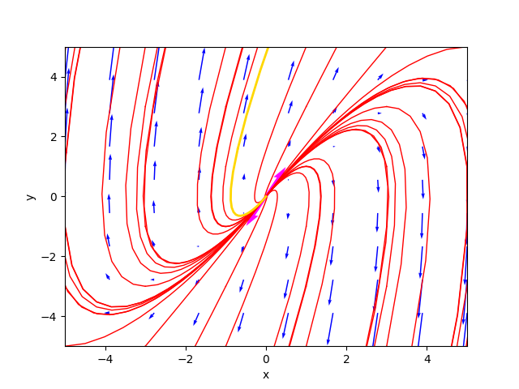
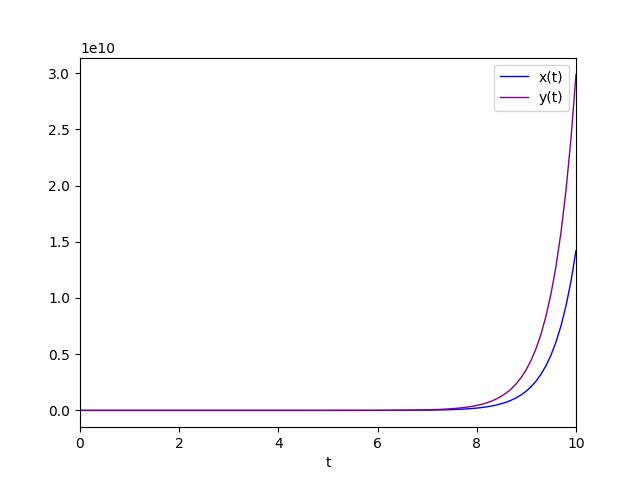
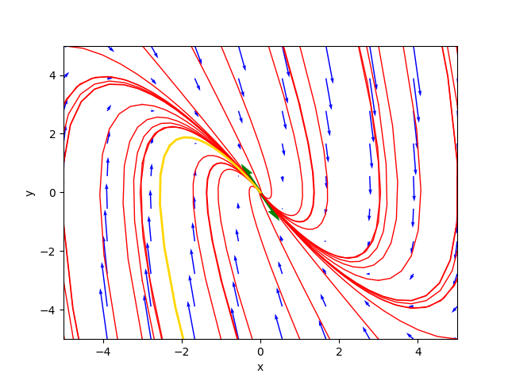
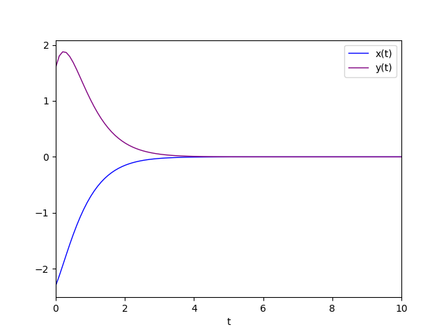
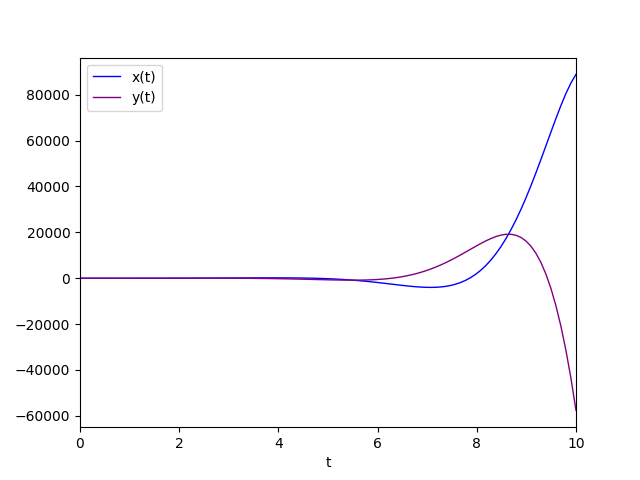
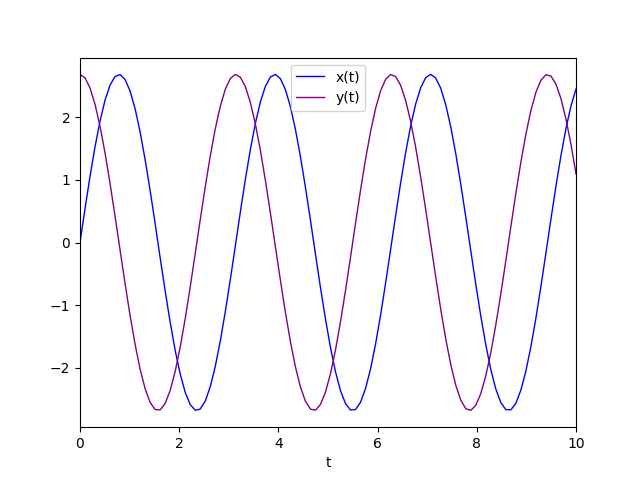
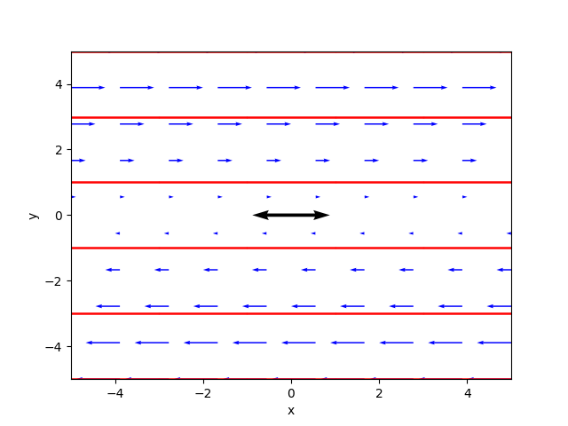

Analyzer of a constant coefficient linear and homogeneous dynamical system on plane
This post presents the Python program cc-lin-plane-homo-sys-analyzer.py and its command line usage.
The program analyzes, using both symbolic techniques (via SymPy) and numerical techniques (via NumPy),
the behavior of a linear and homogeneous dynamic system on the plane with constant coefficients defined
by a system of two differential equations expressed in matrix form:
$$ \frac{d\mathbf{x}}{dt} = A\mathbf{x}$$
where $A$ is a 2x2 matrix with constant and real coefficients
and $\mathbf{x}$ is the unknown vector function $\mathbf{x}(t) : {\rm I\!R} \to {\rm I\!R}^2$.
The program first determines the critical points and then, by analyzing the eigenvalues and eigenvectors of the matrix $A$,
classifies the critical points in the appropriate category by analyzing their type and stability.
Moreover the program calculates the general integral in symbolic form of the solution of the system and optionally calculates also a particular solution
by means of the lambidation of the general solution, provided that the user enters in the command line the values of the two integration constants
that are present in the general solution.
Finally, the program also plots the phase portrait on the plane which provides a qualitative analysis of the behavior of the trajectories
and optionally plots the curve of the particular solution on the phase portrait.
Thanks to Prof. Fausta D'Acunzo from Preparazione 2.0 for the theoretical support provided on systems of differential equations.
To get the code see paragraph Download the complete code at the end of this post.
Conventions
In this post, the conventions used are as follows:
- $t$ is the time independent variable.
- $A$ is the 2x2 matrix of the coefficients of the system; these coefficients are constant and real.
- $\mathbf{x}$ is the unknown vector function $\mathbf{x}(t) : {\rm I\!R} \to {\rm I\!R}^2$.
- $x(t)$ and $y(t)$ are the two components of the unknown function $\mathbf{x}(t)$.
- $C1$ and $C2$ are the arbitrary integration constants of the general solution.
- $\lambda$ indicates any eigenvalue, $\lambda_1$ and $\lambda_2$ are the two eigenvalues of the matrix $A$.
- $\xi$ indicates any eigenvector, $\xi_1$ and $\xi_2$ are two linearly independent eigenvectors of the matrix $A$.
- $\eta$ indicates any generalized eigenvector, $\eta_1$ and $\eta_2$ are two linearly independent generalized eigenvectors of the matrix $A$.
- $\Re{(\lambda)}$ and $\Im{(\lambda)}$ are the operators that extract the real and imaginary parts of a complex eigenvalue, respectively.
- $\Re{(\xi)}$ and $\Im{(\xi)}$ are the operators that respectively extract the real and imaginary part of a complex eigenvector.
Definitions
The following definitions apply in this post:
-
Critical point: a point where the prime derivative cancels; considering the definition of the system, it holds for transitivity:
$$ \frac{d\mathbf{x}}{dt} = A\mathbf{x}=\mathbf{0}$$
and then look for the critical points, i.e. those where the derivative cancels out, is equivalent to looking for the vectors of the plane such that
multiplying the matrix $A$ by them yields the vector $\mathbf{0}$ (which is the origin of the plane).
-
Stationary or equilibrium point: a critical point that is of relative minimum or relative maximum, and not instead a saddle point.
-
Manifold: are the special trajectories determined by the eigenvectors of the matrix $A$.
General solution of homogeneous linear dynamical systems with constant coefficients
From differential calculus we know that the general integral of the solution of the system is one of the following three forms:
- (1) $\mathbf{x}(t) = C_1 e^{\lambda_1 t} \xi_1 + C_2 e^{\lambda_2 t} \xi_2$
- (2)
$\mathbf{x}(t) = C_1 e^{\lambda t} \eta_1 + C_2 e^{\lambda t} (t \eta_1 + \eta_2)$ - (3)
$\mathbf{x}(t) = C_1 e^{\Re{(\lambda_1)} t} (\cos(\Re{(\lambda_1)} t) \Re{(\xi_1)} - \sin(\Im{(\lambda_1)} t) \Im{(\xi_1)} ) + C_2 e^{\Re{(\lambda_2)} t} (\cos(\Re{(\lambda_2)} t) \Re{(\xi_2)} - \sin(\Im{(\lambda_2)} t) \Im{(\xi_2)} ) $
Program features
The program takes in input, through command line, the four real coefficients of the matrix $A$ which represents the system to be studied and determines the following characteristics:
- The set of critical points, which consists only of the origin $\left[\begin{matrix} 0 & 0 \end{matrix} \right]^\dag$ if the determinant of the matrix $A$ is different from zero (case simple system), otherwise it is a line through the origin, or the entire plane in the trivial case of the matrix $A$ equal to the null matrix.
- The class of critical points, divided between stable vs unstable and between node, point, saddle, line, singular, degenerate and any combinations thereof.
- The determinant of the matrix $A$, to distinguish between simple or non-simple system.
- The eigenvalues and eigenvectors of the matrix $A$., distinguishing the various cases between real vs complex, sign (of the real part) concordant or discordant, degenerate cases (geometric multiplicity less than 2); in this last case the program calculates the generalized eigenvectors using an algorithm based on Jordan blocks.
- Symbolic solution of the general integral, using one of three forms (1), (2), or (3) depending on the class of critical points.
- The trajectories, plotted in red and computed by numerically solving the system of differential equations by discretely varying the initial condition at time $t=0$.
- A favorite trajectory, plotted in gold color and calculated by lambification of the general solution; tracking of this favorite solution is optional and also requires the value of the two arbitrary integration constants on the command line.
- The gradient, plotted as a vector field with blue arrows; the length of the arrows indicates the value of the modulus of the gradient, the direction indicates the direction in which the gradient vector tends to $\mathbf0$.
- Eigenvectors, drawn only if they have real components; an eigenvector corresponding to a positive eigenvalue is drawn with a magenta colored arrow, an eigenvector corresponding to a negative eigenvalue is drawn with a green arrow, an eigenvector corresponding to an eigenvalue equal to $0$ is drawn with a black arrow.
- The manifolds, drawn only if the eigenvectors have real components, in which case they are plotted in red as lines whose direction is identified by the eigenvectors.
Program usage
To obtain program usage cc-lin-plane-homo-sys-analyzer.py simply run the following command:
$ python cc-lin-plane-homo-sys-analyzer.py --helpusage: cc-lin-plane-homo-sys-analyzer.py [-h] [--version] --matrix MATRIX
[MATRIX ...] [--t_end T_END]
[--t_num_of_samples T_NUM_OF_SAMPLES]
[--x0_begin X0_BEGIN]
[--x0_end X0_END]
[--x0_num_of_samples X0_NUM_OF_SAMPLES]
[--y0_begin Y0_BEGIN]
[--y0_end Y0_END]
[--y0_num_of_samples Y0_NUM_OF_SAMPLES]
[--plot_favourite_sol PLOT_FAVOURITE_SOL]
[--C1 CONSTANT_OF_INTEGRATION_C1]
[--C2 CONSTANT_OF_INTEGRATION_C2]
[--font_size FONT_SIZE]
cc-lin-plane-homo-sys-analyzer.py
analyzes a dynamyc system modeled by a linear planar system
optional arguments:
-h, --help show this help message and exit
--version show program's version number and exit
--matrix MATRIX [MATRIX ...]
coefficents of matrix
|a b|
|c d| of the system
--t_end T_END In the phase portait diagram, it is the final value
of the interval of variable t (starting value of t is 0).
For backward time trajectories, t goes from -t_end to 0;
for forward time trajectories, t goes from 0 to t_end.
--t_num_of_samples T_NUM_OF_SAMPLES
In the phase portait diagram, it is the number of samples
of variable t between -t_end and 0
for backward time trajectories
and also it is the number of samples of variable t
between 0 and t_end
for forward time trajectories
--x0_begin X0_BEGIN In the phase portait diagram, it is the starting value
of the interval of initial condition x0
--x0_end X0_END In the phase portait diagram, it is the final value
of the interval of initial condition x0
--x0_num_of_samples X0_NUM_OF_SAMPLES
In the phase portait diagram, it is the number of samples
of initial condition x0 between x0_begin and x0_end
--y0_begin Y0_BEGIN In the phase portait diagram, it is the starting value
of of interval for initial condition y0
--y0_end Y0_END In the phase portait diagram, it is the final value
of of interval for initial condition y0
--y0_num_of_samples Y0_NUM_OF_SAMPLES
In the phase portait diagram, it is the number of samples
of initial condition y0 between y0_begin and y0_end
--plot_favourite_sol PLOT_FAVOURITE_SOL
'yes' to plot the favourite solution;
if it is 'yes' C1 and C2 are used
to choose the favourite solution
--C1 CONSTANT_OF_INTEGRATION_C1
Value of constant of integration C1 to choose
(together with C2) the favourite solution
--C2 CONSTANT_OF_INTEGRATION_C2
Value of constant of integration C2 to chhose
(together with C1) the favourite solution
--font_size FONT_SIZE
font size-
-h, --help: shows the usage of the program and ends the execution.
-
--version: shows the version of the program and ends the execution.
-
--matrix: the four coefficients of the matrix
$\left[\begin{matrix} a & b \\ c & d \end{matrix} \right]$
.
This option is the only mandatory option.
-
--t_end: interval of the variable $t$ between 0 and t_end; (default 100.0).
In the phase portrait, backward trajectories are drawn by varying the time between -t_end and 0 while forward trajectories are drawn by varying the time between 0 and t_end.
-
--t_num_of_samples: in the phase portrait is denotes the number of discrete values of $t$ between 0 and t_end to plot forward trajectories;
similarly, for backward trajectories, denotes the number of discrete values of $t$ between -t_end and 0; (default: 10).
-
--x0_begin and --x0_end: in the phase portrait indicates interval of change in the initial condition $x_0$; (default respectively: -5.0 and 5.0).
-
--x0_num_of_samples: in the phase portrait indicates the number of discrete values of $x_0$ in the interval specified by the previous option; (default: 6).
-
--y0_begin and --y0_end: in the phase portrait indicates interval of change in the initial condition $y_0$; (default respectively: -5.0 and 5.0).
-
--y0_num_of_samples: in the phase portrait indicates the number of discrete values of $y_0$ in the interval specified by the previous option; (default: 6).
-
--plot_favourite_sol: yes if a favourite solution is to be plotted on the phase portrait; (default: no).
If yes, the program uses the values of the arbitrary integration constants $C_1$ and $C_2$ provided with the following options.
-
--C1 and --C2: denote the values of the arbitrary integration constants $C_1$ and $C_2$, needed to compute a particular solution; (default for both: 1.0).
-
--font_size: font size of all labels present in the figures generated by the program; (default: 10).
Simple homogeneous linear dynamical systems
A linear, homogeneous dynamical system is said to be simple if the determinant of the matrix $A$ is non-zero.
In this case, from trivial considerations of linear algebra, it follows that the only point at which $A\mathbf{x}$ is zero is the point of origin
$\left[\begin{matrix} 0 & 0 \end{matrix} \right]^\dag$
and because of what was noted above in the definition of stationary point in homogeneous linear systems, by transitivity it follows trivially that the only stationary point is therefore the point of origin itself.
Again from trivial linear algebra considerations, if the determinant of the matrix is non-zero, then its eigenvalues will also be non-zero.
The program cc-lin-plane-homo-sys-analyzer.py then analyzes the following cases of simple homogeneous linear systems
to classify the critical node type
$\left[\begin{matrix} 0 & 0 \end{matrix} \right]^\dag$
.
Three cases are distinguished:
- Real eigenvalues distinct and different from 0.
- Real eigenvalues equal to and different from 0.
- Conjugate complex eigenvalues.
Real eigenvalues distinct and different from 0
Three sub-cases are distinguished:
- Real eigenvalues both positive.
- Real eigenvalues both negative.
- real eigenvalues with discordant sign.
Real eigenvalues both positive
In this case, the critical point
$\left[\begin{matrix} 0 & 0 \end{matrix} \right]^\dag$
is classified as unstable node.
The instability is due to the fact that when $t$ tends to infinity the solution diverges
away from the point of equilibrium, so the equilibrium is called unstable.
The general solution is of the form (1).
An example that falls into this category is unstable_node.sh.
The system is represented by the following matrix:
$$\left[\begin{matrix} 2 & 1 \\ 1 & 2 \end{matrix} \right]$$
To study the behavior of such a system run the command:
$ python cc-lin-plane-homo-sys-analyzer.py \
--matrix 2 1 1 2 \
--plot_favourite_sol yes \
--C1 -1.9 --C2 -4.9Critical point(s) : {(0, 0)}
Determinant : 2.9999999999999996
Eigenvalues : 3.0 1.0
Eigenvector 1 : [0.7071067811865475, 0.7071067811865475]
Eigenvector 2 : [-0.7071067811865475, 0.7071067811865475]
Kind of critical point(s) : unstable node
General solution :
⎡ 3.0⋅t 1.0⋅t
⎣0.707106781186547⋅C₁⋅ℯ - 0.707106781186547⋅C₂⋅ℯ 0.707106781186547⋅
3.0⋅t 1.0⋅t⎤
C₁⋅ℯ + 0.707106781186547⋅C₂⋅ℯ ⎦Also, the general solution is the one shown in the output, expressed in a more elegant form, is $$\mathbf{x}=\left[\begin{matrix} \frac{\sqrt{2}}{2} C_1 e^{3t} - \frac{\sqrt{2}}{2} C_2 e^t & \frac{\sqrt{2}}{2} C_1 e^{3t} + \frac{\sqrt{2}}{2} C_2 e^t \end{matrix} \right]$$ .
Note: the underlying NumPy library always returns normalized eigenvectors; if you had done the calculations analytically by hand almost certainly easier to write eigenvectors would have been chosen, such as $\{ \left[\begin{matrix} 1 & -1 \end{matrix} \right]^\dag , \left[\begin{matrix} 1 & 1 \end{matrix} \right]^\dag \}$ and then the general solution would be written as follows: $$\mathbf{x}=\left[\begin{matrix} C_1 e^{3t} - C_2 e^t & C_1 e^{3t} + C_2 e^t \end{matrix} \right]$$ which however is completely equivalent to the one provided by the program. The phase portrait generated by the program is as follows:

The phase portrait in the case of unstable node.
where the gold-colored trajectory is the favorite solution for $C_1=-1.9$ and $C_2=-4.9$.
The diagram of the favorite solution is:

Diagram of the favorite solution
Real eigenvalues both negative
This case is similar to the previous one from the point of view of the form of the general solution but not for the equilibrium
which is considered stable and in fact the critical point
$\left[\begin{matrix} 0 & 0 \end{matrix} \right]^\dag$
is classified as stable node.
The stability is due to the fact that when $t$ tends to infinity the solution converges to
$\left[\begin{matrix} 0 & 0 \end{matrix} \right]^\dag$
approaching the point of equilibrium, so the equilibrium is said to be stable.
The general solution is of the form (1).
An example that falls into this category is stable_node.sh.
The system is represented by the following matrix:
$$\left[\begin{matrix} -2 & -1 \\ -1 & -2 \end{matrix} \right]$$
To study the behavior of such a system run the command:
$ python cc-lin-plane-homo-sys-analyzer.py \
--matrix -2 -1 -1 -2 \
--plot_favourite_sol yes \
--C1 -1.4 --C2 1.5Critical point(s) : {(0, 0)}
Determinant : 2.9999999999999996
Eigenvalues : -1.0 -3.0
Eigenvector 1 : [0.7071067811865475, -0.7071067811865475]
Eigenvector 2 : [0.7071067811865475, 0.7071067811865475]
Kind of critical point(s) : stable node
General solution :
⎡ -1.0⋅t -3.0⋅t
⎣0.707106781186547⋅C₁⋅ℯ + 0.707106781186547⋅C₂⋅ℯ - 0.707106781186
-1.0⋅t -3.0⋅t⎤
547⋅C₁⋅ℯ + 0.707106781186547⋅C₂⋅ℯ ⎦The phase portrait generated by the program is as follows:

The phase portrait in the case of stable node.
where the gold-colored trajectory is the favorite solution for $C_1=-1.4$ and $C_2=1.5$.
The diagram of the favorite solution is:

Diagram of the favorite solution.
Real eigenvalues with discordant sign
This case is similar to the previous one from the point of view of the form of the general solution; stability is different and
the critical point
$\left[\begin{matrix} 0 & 0 \end{matrix} \right]^\dag$
is classified as saddle point;
the solution is divergent since, as we can see from the general integral, the exponential of the positive eigenvalue multiplied $t$ prevails
over the exponential of the negative eigenvalue multiplied $t$ by $t$ which tends to infinity.
The general solution is of the form (1).
An example that falls into this category is saddle_point.sh.
The system is represented by the following matrix:
$$\left[\begin{matrix} -3 & 4 \\ -2 & 3 \end{matrix} \right]$$
To study the behavior of such a system run the command:
$ python cc-lin-plane-homo-sys-analyzer.py \
--matrix -3 4 -2 3 \
--plot_favourite_sol yes \
--C1 -1.4 --C2 1.5Critical point(s) : {(0, 0)}
Determinant : -1.0000000000000004
Eigenvalues : -1.0 1.0
Eigenvector 1 : [-0.8944271909999159, -0.4472135954999579]
Eigenvector 2 : [-0.7071067811865475, -0.7071067811865475]
Kind of critical point(s) : saddle point
General solution :
⎡ -1.0⋅t 1.0⋅t
⎣- 0.894427190999916⋅C₁⋅ℯ - 0.707106781186547⋅C₂⋅ℯ - 0.44721359549
-1.0⋅t 1.0⋅t⎤
9958⋅C₁⋅ℯ - 0.707106781186547⋅C₂⋅ℯ ⎦The phase portrait generated by the program is as follows:

The phase portrait in the case of saddle point.
where the gold-colored trajectory is the favorite solution for $C_1=-1.4$ and $C_2=1.5$.
The diagram of the favorite solution is:

Diagram of the favorite solution.
Equal real eigenvalues and different from 0
That is, an eigenvalue with algebraic multiplicity equal to 2.
Four sub-cases are distinguished:
- Positive eigenvalue with geometric multiplicity equal to 2.
- Negative eigenvalue with geometric multiplicity equal to 2.
- Positive eigenvalue with geometric multiplicity equal to 1.
- Negative eigenvalue with geometric multiplicity equal to 1.
Positive eigenvalue with geometric multiplicity equal to 2
In this case, the critical point
$\left[\begin{matrix} 0 & 0 \end{matrix} \right]^\dag$
is classified as unstable singular node (also called unstable star node);
being singular is given by the fact that the eigenvalue is only one (with algebraic multiplicity equal to 2)
and with geometric multiplicity equal to 2, which guarantees that we still have two linearly independent eigenvectors to construct the general integral.
The general solution is of the form (1) where $\lambda_1=\lambda_2$.
An example that falls into this category is unstable_singular_node.sh.
The system is represented by the following matrix:
$$\left[\begin{matrix} 1 & 0 \\ 0 & 1 \end{matrix} \right]$$
To study the behavior of such a system run the command:
$ python cc-lin-plane-homo-sys-analyzer.py \
--matrix 1 0 0 1 \
--plot_favourite_sol yes \
--C1 -2.3 --C2 -4.9Critical point(s) : {(0, 0)}
Determinant : 1.0
Eigenvalues : 1.0 1.0
Eigenvector 1 : [1.0, 0.0]
Eigenvector 2 : [0.0, 1.0]
Kind of critical point(s) : unstable singular node (said also star point)
General solution :
⎡ 1.0⋅t 1.0⋅t⎤
⎣1.0⋅C₁⋅ℯ 1.0⋅C₂⋅ℯ ⎦The general solution is still of the same form as above, only the calculation allows for some simplification since the two exponentials are equal.
The phase portrait generated by the program is as follows:

The phase portrait in the case of di unstable singular node.
where the gold-colored trajectory is the favorite solution for $C_1=-2.3$ and $C_2=-4.9$.
The diagram of the favorite solution is:

Diagram of the favorite solution.
Negative eigenvalue with geometric multiplicity equal to 2
This case is very similar to the previous case: the only difference is the equilibrium of the critical point
$\left[\begin{matrix} 0 & 0 \end{matrix} \right]^\dag$
which is stable
then the critical point is classified as stable singular node (also called stable star node);
the eigenvalue is only one (with algebraic multiplicity equal to 2) and it is -1, so negative,
and with geometric multiplicity equal to 2, which guarantees that we still have two linearly independent eigenvectors to construct the general integral.
The general solution is of the form (1) where $\lambda_1=\lambda_2$.
An example that falls into this category is stable_singular_node.sh.
The system is represented by the following matrix:
$$\left[\begin{matrix} -1 & 0 \\ 0 & -1 \end{matrix} \right]$$
To study the behavior of such a system run the command:
$ python cc-lin-plane-homo-sys-analyzer.py \
--matrix -1 0 0 -1 \
--plot_favourite_sol yes \
--C1 -1.9 --C2 -4.4Critical point(s) : {(0, 0)}
Determinant : 1.0
Eigenvalues : -1.0 -1.0
Eigenvector 1 : [1.0, 0.0]
Eigenvector 2 : [0.0, 1.0]
Kind of critical point(s) : stable singular node (said also star point)
General solution :
⎡ -1.0⋅t -1.0⋅t⎤
⎣1.0⋅C₁⋅ℯ 1.0⋅C₂⋅ℯ ⎦The phase portrait generated by the program is as follows:

The phase portrait in the case of stable singular node.
where the gold-colored trajectory is the favorite solution for $C_1=-1.9$ and $C_2=-4.4$.
The diagram of the favorite solution is:

Diagram of the favorite solution.
Positive eigenvalue with geometric multiplicity equal to 1
This case is the most complicated since the geometric multiplicity of the double eigenvalue equal to 1
prevents us from having two linearly independent eigenvectors and so we must resort to the chain of generalized eigenvectors
and use the form (2) of the general integral where $\lambda$ is the double eigenvalue
and $\eta_1$ and $\eta_2$ are two linearly independent generalized eigenvectors.
The critical point
$\left[\begin{matrix} 0 & 0 \end{matrix} \right]^\dag$
is classified as an unstable degenerate node;
being degenerate is given by the fact that the eigenvalue is only one (with algebraic multiplicity equal to 2)
and with geometric multiplicity equal to 1, while the instability is given by the positive sign of the eigenvalue.
For the computation of the chain of generalized eigenvectors, which is based on an algorithm using Jordan blocks, see the implementation of the program
(precisely the Python function compute_generalized_eigenvectors).
An example that falls into this category is unstable_degenerate_node.sh.
The system is represented by the following matrix:
$$\left[\begin{matrix} 0 & 1 \\ -4 & 4 \end{matrix} \right]$$
To study the behavior of such a system run the command:
$ python cc-lin-plane-homo-sys-analyzer.py \
--matrix 0 1 -4 4 \
--plot_favourite_sol yes \
--C1 -0.4 --C2 -1.5Critical point(s) : {(0, 0)}
Determinant : 4.0
Eigenvalues : 2.0 2.0
Eigenvector 1 : [0.447213595499958, 0.8944271909999157]
Eigenvector 2 : [-0.4472135954999581, -0.8944271909999157]
Generalized Eigenvector 1 : [-2.00000000000000, -4.00000000000000]
Generalized Eigenvector 2 : [1.00000000000000, 0]
Kind of critical point(s) : unstable degenerate node
General solution :
⎡ 2.0⋅t 2.0⋅t 2.0⋅t 2.0⋅t⎤
⎣- 2.0⋅C₁⋅ℯ + C₂⋅(1.0 - 2.0⋅t)⋅ℯ - 4.0⋅C₁⋅ℯ - 4.0⋅C₂⋅t⋅ℯ ⎦The critical point was then classified as unstable degenerate node.
The phase portrait generated by the program is as follows::

The phase portrait in the case of unstable degenerate node.
where the gold-colored trajectory is the favorite solution for $C_1=-0.4$ and $C_2=-1.5$.
The diagram of the favorite solution is:

Diagram of the favorite solution.
Negative eigenvalue with geometric multiplicity equal to 1
This case is similar to the previous one from the point of view of the form of the general solution but not for the equilibrium
which is considered stable and in fact the critical point
$\left[\begin{matrix} 0 & 0 \end{matrix} \right]^\dag$
is classified as a stable degenerate node.
The general solution is obviously of the form (2) where $\lambda$ is the dual eigenvalue
and $\eta_1$ and $\eta_2$ are two linearly independent generalized eigenvectors.
An example that falls into this category is unstable_degenerate_node.sh.
The system is represented by the following matrix:
$$\left[\begin{matrix} 0 & 1 \\ -4 & -4 \end{matrix} \right]$$
To study the behavior of such a system run the command:
$ python cc-lin-plane-homo-sys-analyzer.py \
--matrix 0 1 -4 -4 \
--plot_favourite_sol yes \
--C1 -0.4 --C2 -1.5Critical point(s) : {(0, 0)}
Determinant : 4.0
Eigenvalues : -2.0 -2.0
Eigenvector 1 : [0.447213595499958, -0.8944271909999157]
Eigenvector 2 : [-0.4472135954999578, 0.8944271909999159]
Generalized Eigenvector 1 : [2.00000000000000, -4.00000000000000]
Generalized Eigenvector 2 : [1.00000000000000, 0]
Kind of critical point(s) : stable degenerate node
General solution :
⎡ -2.0⋅t -2.0⋅t -2.0⋅t -2.0⋅t⎤
⎣2.0⋅C₁⋅ℯ + C₂⋅(2.0⋅t + 1.0)⋅ℯ - 4.0⋅C₁⋅ℯ - 4.0⋅C₂⋅t⋅ℯ ⎦The critical point was then classified as stable degenerate node.
The phase portrait generated by the program is as follows:

The phase portrait in the case of stable degenerate node.
where the gold-colored trajectory is the favorite solution for $C_1=-0.4$ and $C_2=-1.5$.
The diagram of the favorite solution is:

Diagram of the favorite solution.
Conjugate complex eigenvalues
In the case of complex eigenvalues, they are necessarily conjugate by the fundamental theorem of algebra
since the coefficients of the matrix $A$ are real..
Three sub-cases are distinguished:
- Conjugate complex eigenvalues with positive real part.
- Conjugate complex eigenvalues with negative real part.
- Conjugate complex eigenvalues with real part equal to 0.
Conjugate complex eigenvalues with positive real part
In this case, the critical point
$\left[\begin{matrix} 0 & 0 \end{matrix} \right]^\dag$
is classified as unstable focus.
The instability is always due to the fact that when $t$ tends to infinity the solution diverges
away from the point of equilibrium, so the equilibrium is called unstable.
The general solution is of the form (3).
An example that falls into this category is unstable_focus.sh.
The system is represented by the following matrix:
$$\left[\begin{matrix} 1 & 1 \\ -1 & 1 \end{matrix} \right]$$
To study the behavior of such a system run the command:
$ python cc-lin-plane-homo-sys-analyzer.py \
--matrix 1 1 -1 1 \
--plot_favourite_sol yes \
--C1 -2.9 --C2 -3.9Critical point(s) : {(0, 0)}
Determinant : 2.0
Eigenvalues : (1+1j) (1-1j)
Eigenvector 1 : [(0.7071067811865475+0j), 0.7071067811865475j]
Eigenvector 2 : [(0.7071067811865475-0j), -0.7071067811865475j]
Kind of critical point(s) : unstable focus
General solution :
⎡ 1.0⋅t 1.0⋅t
⎣0.707106781186547⋅C₁⋅ℯ ⋅cos(1.0⋅t) + 0.707106781186547⋅C₂⋅ℯ ⋅cos(1.0⋅
1.0⋅t 1.0⋅t
t) - 0.707106781186547⋅C₁⋅ℯ ⋅sin(1.0⋅t) - 0.707106781186547⋅C₂⋅ℯ ⋅sin
⎤
(1.0⋅t)⎦The phase portrait generated by the program is as follows:

The phase portrait in the case of unstable focus.
where the gold-colored trajectory is the favorite solution for $C_1=-2.9$ and $C_2=-3.9$.
The diagram of the favorite solution is:

Diagram of the favorite solution.
Conjugate complex eigenvalues with negative real part
This case is similar to the previous one from the point of view of the shape of the general solution but not for the equilibrium;
which is considered stable and in fact the critical point
$\left[\begin{matrix} 0 & 0 \end{matrix} \right]^\dag$
is classified as stable focus.
The stability is due to the fact that when $t$ tends to infinity the solution converges to
$\left[\begin{matrix} 0 & 0 \end{matrix} \right]^\dag$
approaching the point of equilibrium, so the equilibrium is said to be stable.
The general solution is of the form (3).
An example that falls into this category is stable_focus.sh.
The system is represented by the following matrix:
$$\left[\begin{matrix} -1 & -1 \\ 1 & -1 \end{matrix} \right]$$
To study the behavior of such a system run the command:
$ python cc-lin-plane-homo-sys-analyzer.py \
--matrix -1 -1 1 -1 \
--plot_favourite_sol yes \
--C1 1.3 --C2 -1.4Critical point(s) : {(0, 0)}
Determinant : 2.0
Eigenvalues : (-1+1j) (-1-1j)
Eigenvector 1 : [(0.7071067811865475+0j), -0.7071067811865475j]
Eigenvector 2 : [(0.7071067811865475-0j), 0.7071067811865475j]
Kind of critical point(s) : stable focus
General solution :
⎡ -1.0⋅t -1.0⋅t
⎣0.707106781186547⋅C₁⋅ℯ ⋅cos(1.0⋅t) + 0.707106781186547⋅C₂⋅ℯ ⋅cos(1.0⋅t)
-1.0⋅t -1.0⋅t
0.707106781186547⋅C₁⋅ℯ ⋅sin(1.0⋅t) + 0.707106781186547⋅C₂⋅ℯ ⋅sin(1.0⋅t
⎤
)⎦The phase portrait generated by the program is as follows:

The phase portrait in the case of stable focus.
where the gold-colored trajectory is the favorite solution for $C_1=1.3$ and $C_2=-1.4$.
The diagram of the favorite solution is:

Diagram of the favorite solution.
Conjugate complex eigenvalues with real part equal to 0
In this case, the critical point
$\left[\begin{matrix} 0 & 0 \end{matrix} \right]^\dag$
is classified as center.
We cannot speak of equilibrium because the solutions are oscillating and the orbits are concentric ellipses
centered on the origin.
The general solution is of the form (3).
An example that falls into this category is center.sh.
The system is represented by the following matrix:
$$\left[\begin{matrix} 0 & 2 \\ -2 & 0 \end{matrix} \right]$$
To study the behavior of such a system run the command:
$ python cc-lin-plane-homo-sys-analyzer.py \
--matrix 0 2 -2 0 \
--plot_favourite_sol yes \
--C1 1.8 --C2 2.0Critical point(s) : {(0, 0)}
Determinant : 4.0
Eigenvalues : 2.0000000000000004j -2.0000000000000004j
Eigenvector 1 : [-0.7071067811865475j, (0.7071067811865476+0j)]
Eigenvector 2 : [0.7071067811865475j, (0.7071067811865476-0j)]
Kind of critical point(s) : center
General solution :
[0.707106781186547⋅C₁⋅sin(2.0⋅t) + 0.707106781186547⋅C₂⋅sin(2.0⋅t) 0.707106781186
548⋅C₁⋅cos(2.0⋅t) + 0.707106781186548⋅C₂⋅cos(2.0⋅t)]The phase portrait generated by the program is as follows:

The phase portrait in the case of center.
where the gold-colored trajectory is the favorite solution for $C_1=1.8$ and $C_2=2.0$.
The diagram of the favorite solution is:

Diagram of the favorite solution.
Non-simple homogeneous linear dynamical systems
A linear, homogeneous dynamical system is said to be non-simple if the determinant of the matrix $A$ is zero.
In this case the set of critical points is a line through the origin,
or the entire plane in the very trivial and very special case that the matrix $A$ is the null matrix.
From linear algebra we know that if the determinant is 0 at least one eigenvalue is 0, which is real,
so the other eigenvalue must also be real, by the fundamental algebra theorem
the coefficients of the matrix being real.
That said, two cases are distinguished:
- The second eigenvalue different from 0.
- The second eigenvalue equals 0.
The second eigenvalue different from 0
Two sub-cases are further distinguished:
- The second eigenvalue is positive real.
- The second eigenvalue is negative real.
The second eigenvalue is positive real
In this case the critical points are infinite and lie on a line through the origin, and the set of critical points is classified as an unstable line.
The instability is due, as seen above, to the positivity of the eigenvalue which causes the solution to diverge as $t$ tends to infinity.
The general solution is of the form (1) where $\lambda_1$ equal to 0.
An example that falls into this category is unstable_line.sh.
The system is represented by the following matrix:
$$\left[\begin{matrix} 0 & -1 \\ 0 & 2 \end{matrix} \right]$$
To study the behavior of such a system run the command:
$ python cc-lin-plane-homo-sys-analyzer.py \
--matrix 0 -1 0 2 \
--plot_favourite_sol yes \
--C1 2.0 --C2 3.2Critical point(s) : {(x, 0)}
Determinant : 0.0
Eigenvalues : 0.0 2.0
Eigenvector 1 : [1.0, 0.0]
Eigenvector 2 : [-0.4472135954999579, 0.8944271909999159]
Kind of critical point(s) : unstable line
General solution :
⎡ 2.0⋅t 2.0⋅t⎤
⎣1.0⋅C₁ - 0.447213595499958⋅C₂⋅ℯ 0.894427190999916⋅C₂⋅ℯ ⎦The phase portrait generated by the program is as follows:

The phase portrait in the case of unstable line.
where the gold-colored trajectory is the favorite solution for $C_1=2.0$ and $C_2=3.2$.
The diagram of the favorite solution is:

Diagram of the favorite solution.
The second eigenvalue is negative real
This case is similar to the previous one from the point of view of the form of the general solution but not for the equilibrium
which is considered stable and in fact in this case the critical points are always infinite and always lie on a line passing through the origin
but the set of critical points this time is classified as stable line.
Stability is due to the negativity of the eigenvalue that causes the solution to converge as $t$ tends to infinity.
The general solution is of the form (1) where $\lambda_1$ uguale a 0.
An example that falls into this category is stable_line.sh.
Il sistema è rappresentato dalla seguente matrice:
$$\left[\begin{matrix} 1 & 1 \\ -2 & -2 \end{matrix} \right]$$
To study the behavior of such a system run the command:
$ python cc-lin-plane-homo-sys-analyzer.py \
--matrix 1 1 -2 -2 \
--plot_favourite_sol yes \
--C1 3.0 --C2 3.2Critical point(s) : {(-1.0⋅y, y)}
Determinant : 0.0
Eigenvalues : 0.0 -1.0
Eigenvector 1 : [0.7071067811865475, -0.7071067811865475]
Eigenvector 2 : [-0.4472135954999579, 0.8944271909999159]
Kind of critical point(s) : stable line
General solution :
⎡ -1.0⋅t
⎣0.707106781186547⋅C₁ - 0.447213595499958⋅C₂⋅ℯ -0.707106781186547⋅C₁ + 0.89
-1.0⋅t⎤
4427190999916⋅C₂⋅ℯ ⎦The phase portrait generated by the program is as follows:

The phase portrait in the case of stable line.
where the gold-colored trajectory is the favorite solution for $C_1=3.0$ and $C_2=3.2$.
The diagram of the favorite solution is:

Diagram of the favorite solution.
The second eigenvalue equals 0.
So the eigenvalue 0 is double, that is, it has algebraic multiplicity equal to 2.
Two sub-cases are further distinguished:
- The double eigenvalue 0 with geometric multiplicity equal to 1.
- The double eigenvalue 0 with geometric multiplicity equal to 2.
The double eigenvalue 0 with geometric multiplicity equal to 1
This case is complicated because the geometric multiplicity of the double eigenvalue equal to 1
prevents us from having two linearly independent eigenvectors, so we must resort to the chain of generalized eigenvectors
and use the form (2) of the general integral where $elambda$ is 0
and $\eta_1$ and $\eta_2$ are two linearly independent generalized eigenvectors.
In this case the critical points are infinite and lie on a line through the origin and the set of critical points is classified as degenerate line.
being degenerate is given by the fact that the eigenvalue is only one (the null eigenvalue with algebraic multiplicity equal to 2)
and with geometric multiplicity equal to 1.
For the computation of the chain of generalized eigenvectors, which is based on an algorithm using Jordan blocks, see the implementation of the program
(precisely the Python function compute_generalized_eigenvectors).
An example that falls into this category is degenerate_line.sh.
The system is represented by the following matrix:
$$\left[\begin{matrix} 0 & 1 \\ 0 & 0 \end{matrix} \right]$$
To study the behavior of such a system run the command:
$ python cc-lin-plane-homo-sys-analyzer.py \
--matrix 0 1 0 0Critical point(s) : {(x, 0)}
Determinant : 0.0
Eigenvalues : 0.0 0.0
Eigenvector 1 : [1.0, 0.0]
Eigenvector 2 : [-1.0, 2.004168360008973e-292]
Generalized Eigenvector 1 : [1.00000000000000, 0]
Generalized Eigenvector 2 : [0, 1.00000000000000]
Kind of critical point(s) : degenerate line
General solution :
[1.0⋅C₁ + 1.0⋅C₂⋅t 1.0⋅C₂]The line of critical points was classified as a degenerate line.
The phase portrait generated by the program is as follows:

The phase portrait in the case of degenerate line.
The double eigenvalue 0 with geometric multiplicity equal to 2
This case is very special and very trivial and corresponds to the null matrix $A$.
The set of critical points consists of the whole plane.
An example that falls into this category is degenerate_line.sh.
The system is represented by the following matrix:
$$\left[\begin{matrix} 0 & 0 \\ 0 & 0 \end{matrix} \right]$$
To study the behavior of such a system run the command:
$ python cc-lin-plane-homo-sys-analyzer.py \
--matrix 0 0 0 0Critical point(s) : {(x, y)}
Determinant : 0.0
Eigenvalues : 0.0 0.0
Eigenvector 1 : [1.0, 0.0]
Eigenvector 2 : [0.0, 1.0]
Kind of critical point(s) : whole plane
General solution :
NoneThe set of critical points was classified as whole plane.
Citations
Serena Costanzini
ANALISI DEI SISTEMI DINAMICI E DELLA LORO STABILITA' NELLE APPLICAZIONI ECONOMICHE
Alma Mater Studiorum · University of Bologna
2008/2009Bibliography
Stephen Lynch
Dynamical Systems with Applications using Python
Springer
2018Download of the complete code
The complete code is available at GitHub.
These materials are distributed under MIT license; feel free to use, share, fork and adapt these materials as you see fit.
Also please feel free to submit pull-requests and bug-reports to this GitHub repository or contact me on my social media channels available on the top right corner of this page.